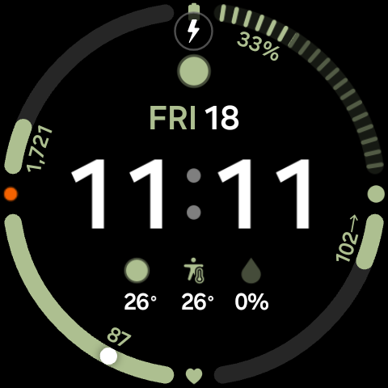
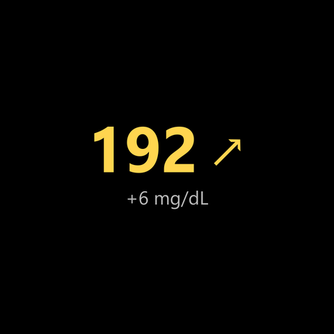
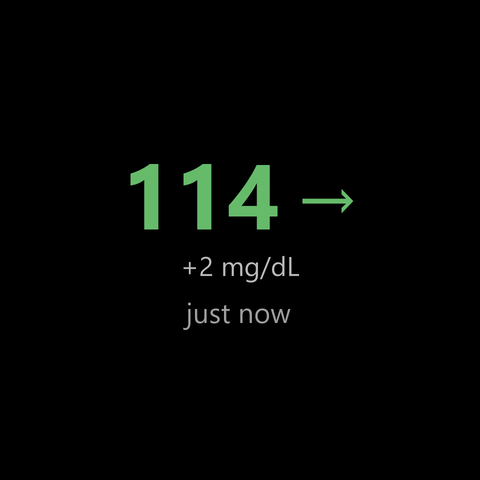
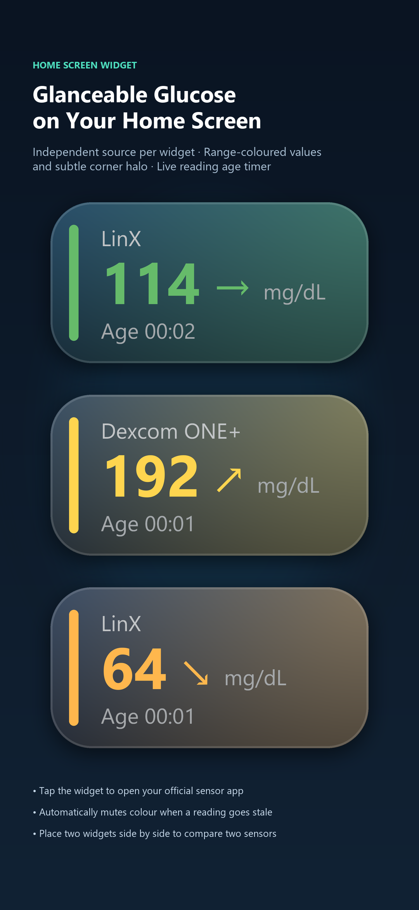
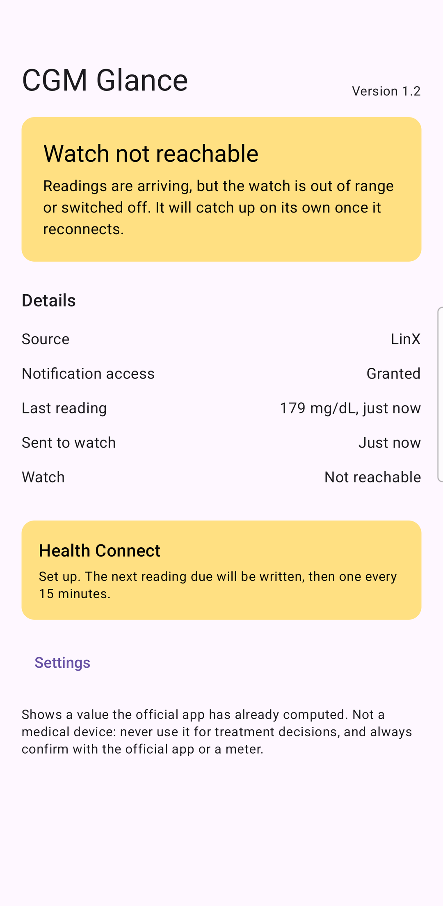
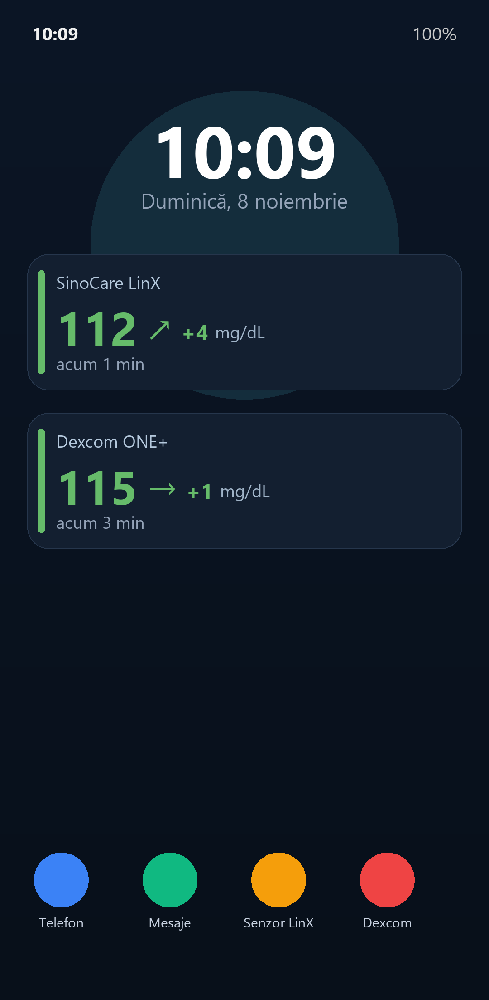

CGM Glance preia local notificarea aplicației oficiale SinoCare LinX sau Dexcom ONE+ și o trimite direct pe ceasul Wear OS și în widget-uri — zero cloud, zero servere, zero cont.
CGM Glance reads your official SinoCare LinX or Dexcom ONE+ phone notification locally and sends it straight to your Wear OS watch and widgets — no cloud, no servers, no account.
Aplicația se află în testare comunitară pe Google Play. Deblochează descărcarea oficială în mai puțin de 30 de secunde:
The app is currently in community testing on Google Play. Unlock the official store download in less than 30 seconds:
Deschide pagina grupului (cu același cont Google pe care îl ai pe telefon) și apasă pe „Join group” / „Alătură-te grupului”. Nu e nevoie să lași adresa de email în comentarii!
Open the Google Group (signed in with the Google account used on your phone) and tap "Join group". No comments or personal emails needed!
După ce ai intrat în grup, acceptă invitația („Become a tester”) și instalează CGM Glance pe telefon și pe ceasul Wear OS.
Once joined, accept the invite ("Become a tester") and install CGM Glance on both your phone and your Wear OS watch.
Compatibil cu Samsung Galaxy Watch 4, 5, 6, 7, 8, Ultra, Google Pixel Watch, Xiaomi Watch 2 și orice ceas modern cu Wear OS 3+.
Compatible with Samsung Galaxy Watch 4, 5, 6, 7, 8, Ultra, Google Pixel Watch, Xiaomi Watch 2, and any Wear OS 3+ smartwatch.

Adaugă slotul „Glucose” pe cadranul tău preferat pentru a vedea glicemia, săgeata de trend și variația Delta (+ / -) de fiecare dată când ridici încheietura.
Add the "Glucose" complication to any slot on your favorite watch face for glanceable readings, trend arrow, and numeric Delta (+ / -) every time you check the time.

Glisează o singură dată de pe cadran pentru cardul CGM Glance cu cifre mari, colorate în funcție de țintă, și variația recentă Delta (+4 mg/dL).
Swipe once from your watch face for high-contrast glucose numbers, range colors, and recent Delta change (+4 mg/dL).

Apasă pe complicație sau pe card pentru a deschide ecranul detaliat cu valoarea, trendul, variația Delta și vechimea exactă a citirii.
Tap the complication or tile to open the full watch view with glucose value, trend arrow, Delta change, and exact reading timestamp.
Plasează widget-uri redimensionabile pe ecranul principal și verifică oricând conexiunea cu senzorul și ceasul.
Place resizable glucose widgets on your home screen and monitor sensor, watch sync, and Health Connect status in one place.

Valoare mare, săgeată de trend, variație numerică Delta (+2 / +6 / -5 mg/dL), cronometru live de la citire și culori dinamice pentru valori în țintă sau în afara țintei.
Range-colored readings with calculated trend arrows, signed Delta change (+2 / +6 / -5 mg/dL), and a live reading-age timer right on your home screen.

Vezi instant permisiunea de notificare, starea conexiunii Bluetooth cu ceasul și salvarea automată în Health Connect.
Instantly verify notification listener status, Wear OS watch pairing, and optional Health Connect synchronization.

Alege senzorul activ, pragurile de culoare, unitatea (mg/dL sau mmol/L) și fereastra de calcul Delta (5, 10, 15 sau 20 min).
Configure your active sensor, range thresholds, display unit (mg/dL or mmol/L), and Delta calculation window (5, 10, 15, or 20 min).
Alege pasul dorit sau urmează traseul complet pentru a configura ceasul și widget-urile în câteva minute:
Select any step or follow the full walkthrough to configure your watch and home screen widgets in minutes:
112 ↗ (+4)). Sloturile mici rotunde afișează compact 112↗.
Wider complication slots (Long text) display the glucose value, trend arrow, and Delta change (e.g. 112 ↗ (+4)). Smaller slots display cleanly as 112↗.
Creat de la zero fără compromisuri comerciale: fără reclame, fără analitice, fără conturi obligatorii.
Built from the ground up without commercial compromises: no ads, no trackers, no forced accounts.
| Criteriu Feature | Soluții prin cloud Cloud solutions | CGM Glance |
|---|---|---|
| Internet necesar Internet required | Da Yes | Nu (0% internet) No (0% internet) |
| Cont obligatoriu Account required | De obicei Usually | Nu No |
| Datele trec prin servere Data passes through servers | Da Yes | Nu (100% local) No (100% local) |
| Întârziere suplimentară Extra cloud delay | Posibilă Possible | Nu (doar Bluetooth) No (Bluetooth only) |
Aplicația nu solicită permisiunea de internet (INTERNET). Citirile tale nu părăsesc niciodată telefonul și ceasul tău.
The app does not even request the Android INTERNET permission. Your glucose readings never leave your personal devices.
Arhitectură bazată pe evenimente (event-driven). Se actualizează doar când aplicația oficială a senzorului postează o citire nouă. Fără bucle permanente.
Pure event-driven push architecture. Updates are triggered only when the official sensor notification posts a new reading. Zero battery waste.
Calculează automat diferența semnată față de o citire anterioară. Intervalul este reglabil din setări (5, 10, 15 sau 20 de minute, implicit 10 min) și apare pe widget și pe ceas.
Calculates the signed difference compared to a previous reading. Configurable window in settings (5, 10, 15, or 20 minutes, 10 min default) across widgets and watch.
Cifrele se colorează în verde (în țintă, ex. 70–180 mg/dL), galben (peste țintă) sau portocaliu/roșu (sub țintă) pentru lizibilitate dintr-o privire.
High-contrast numbers color-code into target green (e.g. 70–180 mg/dL), high amber, or low orange/red for effortless readability at a glance.
Parser nativ ultra-rapid pentru notificările ambelor aplicații oficiale, cu calcul local automat al săgeților de trend și al vârstei citirii.
High-performance native parser for both official CGM companion notifications with local trend calculation and reading timers.
Opțional, poate sincroniza citirile locale direct în baza de date Android Health Connect de pe telefonul tău, dacă dorești să le stochezi.
Optionally syncs blood glucose records locally into Android Health Connect on your phone if you wish to centralize your records.
Întregul cod sursă este public și verificabil pe GitHub. Comunitatea poate contribui cu noi integrări sau sugestii.
The full source code is publicly accessible on GitHub under the GPL-3.0 license. Community contributions and feedback are welcome.